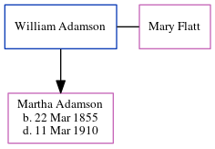

William Adamson
[ Home ] | [ Calendar ] | [ Surnames Index ] | [ Census Index ] | [ Family History ]William Adamson and married Mary Flatt (with whom he had 1 child, Martha Sarah) in Earsdon, Northumberland, England on Jul 22, 18321.
Children
- Martha Sarah was born on Mar 22, 1855
Citations
- Northumberland And Durham Marriages - Findmypast
Media
Northumberland and Durham Marriages - GBPRS/M/356180033/1
Family Tree
Generated by ged2site. Last updated on Jun 11, 2024